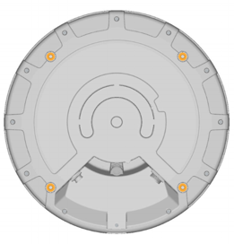

Q35 Locator 사용 방법
이 섹션에서는 Q35 설치 방법 및 장치를 전원 공금 장치 및 네트워크에 연결하는 방법과 관련해 유용한 정보를 안내해 드립니다.
설치
Q35는 일체의 금속 차단물(예: 에어컨 배관, 대형 천장 트러스, 건물 상부 구조물) 없이 장치 측면이나 전면에 장착해야 합니다. 차단물이 필요한 경우, 단단한 파이프를 사용해 Q35를 아래로 내려 이러한 차단물로부터 거리를 두도록 합니다.
VESA 마운트를 사용한 설치
호환 가능한 장착 브래킷 선택하기
Q35의 장착 구멍은 VESA MIS-F, 200, Y, 6 기준(200x200mm 패턴으로 된 M6 스레디드 구멍 4개)에 맞게 배열되어 있습니다. 설치 환경에 따른 요건에 맞는 장착 브래킷을 선택하십시오. 장착 모델에 따라 설치 시 케이블 포트 액세스에 방해가 될 수 있다는 점을 참고하십시오. 장착 브래킷이 Quuppa Q35의 중량(1.3kg)과 혹시 있을 풍하중을 견딜 수 있는지 확인하십시오.
장치 설치

- 이더넷 케이블(및 사용 경우 Micro USB 케이블)을 Locator에 연결합니다. 장치의 이더넷 포트는 USB Firewire RR-125300-03-ZX(GTContact GT125300-03-Z3)입니다. 설치를 진행하기 전해 케이블 호환 여부를 반드시 확인하십시오. Q35는 차폐 또는 비차폐 이더넷(예: Cat5e/6)과 함께 사용 가능합니다. 각 설치 환경에 가장 적합한 형태의 케이블을 선택하시면 됩니다. 예를 들어, 까다로운 환경(예: 산업용 또는 실외)인 경우 전자기 간섭(EMI)와 정전기 방전으로부터 효과적으로 보호할 수 있도록 차폐 케이블을 선택는 것이 좋습니다. Note: 실외 환경(또는 습도가 높거나 먼지가 많은 실내 환경)에 장치를 설치하는 경우 물, 수분 및 먼지로부터 장치를 보호할 수 있도록 실외용으로 설계된 케이블과 커넥터를 사용하도록 하십시오. 이 경우 설치물이 실제 방수 효과를 갖도록 하려면 다음 사항을 권장합니다.
- 제품이 출시될 때 이미 방수 커넥터가 부착되어 있는 기성품 케이블을 사용하십시오. 예: USB Firewire RR-125320-02-XX(GTContact GT125320-0X-xx). 기성품 케이블이 없는 경우 RJ45 커넥터 위로 호환되는 커넥터 하우징 부속품을 사용하셔도 됩니다. 예: USB Firewire RR-125360-00 또는 USB Firewire RR-125330-00).
- 케이블 커넥터는 제조사의 지침에 따라 단단히 고정하도록 하십시오.
- USB에서 보호 캡은 USB 포트를 사용해 Locator에 전원을 공급하는 경우가 아니면 제거하지 마십시오. 전원 공급에 사용하는 경우에도 반드시 방수 처리된 USB 케이블 커넥터를 사용하십시오. Q35의 USB 포트는 USBFirewire RR-11A200-0P-XX이며 USBFirewire RR-11B220-05-XX 시리즈 방수 USB 케이블과 호환됩니다.
호환 커넥터 및 케이블에 관한 자세한 사항은 support@quuppa.com으로 Quuppa 지원 팀에 문의해 주시기 바랍니다.
- 이더넷 케이블 테스터를 사용해 케이블을 확인하고, 커넥터가 모두 안전하게 고정되어 있는지 확인합니다. PoE 스위치로 라우팅할 때 케이블을 급하게 돌리거나, 구부리거나, 당기지 마십시오. 연결 문제를 해결할 때 장치의 표시등을 사용할 수도 있습니다. 자세한 사항은 아래에 있는 네트워크에 연결 섹션을 참조하십시오.
- 볼트 4개를 사용해 Q35를 장착 브래킷에 부착합니다(아래 그림 참조). M6 볼트와 2 Nm 어셈블리 토크를 사용합니다(최대 허용 토크는 2.5 Nm입니다).
얇은 브래킷의 경우 10mm 길이의 M6 볼트를 사용하면 됩니다. 두꺼운 브래킷의 경우, 적합한 볼트 길이를 확인해 보십시오(사용할 볼트의 최대 길이는 사용할 VESA 마운트의 두께 + 10mm입니다). 장치가 파손되지 않도록 적절한 길이의 볼트를 사용하는 것이 매우 중요합니다.

- VESA 장착 브래킷을 벽, 천장 또는 기둥에 부착합니다.Warning: 설치하기 전에는 설치 표면 또는 마스트가 장비의 무게 및 풍하중을 안전하게 수용할 수 있는지 항상 확인하십시오.
- Q35가 목표한 적용 범위로 향하도록 하고 패스너를 모두 조입니다.
- 이더넷 케이블의 다른 쪽 끝이 Quuppa 시스템에 연결된 장치에 연결되었는지 확인합니다.
설치 팁
-
실외에 설치하는 경우 빗물이 장치에 고이지 않고 흘러내릴 수 있도록 기울여서 설치합니다.

-
대규모 설치 프로젝트인 경우 설치 부품을 모두 주문하기 전에 먼저 시험적으로 설치해 보십시오.
-
현지 당국의 안전 요건을 확인하고, 필요한 경우 안전한 설치를 위해 안전 결선을 사용하십시오.
-
Q35가 의도한 영역을 커버할 수 있도록 하려면 기울여 설치해야 하는 경우 반드시 필요한 만큼의 기울기를 반영해 장치를 장착하십도록 하십시오.
전원 공급 장치에 연결
옵션 1: PoE(이더넷 전원 장치) 사용
Q35는 표준 IEEE 802.3at 타입 1 PoE 구성 요소 사용을 지원합니다(예: 전원 공급 장치로서의 PoE 스위치 또는 전원 인젝터). 반드시 표준 인증 PoE 장치를 사용하십시오. PoE 사용 시 별도의 DC 전원 공급 장치는 필요하지 않습니다.
옵션 2: 별도의 5V DC Micro USB 사용
PoE 구성 요소를 사용 하지 않는 경우 Micro USB를 사용해 Q35를 5V 전원 공급 장치에 연결하십시오. 반드시 호환되는 전원 공급 장치를 사용하십시오. 호환성 있는 전원 공급 장치에 대해 궁금한 사항이 있으시면 Quuppa에 문의해 주십시오.
전원이 연결되면 Q35가 자동적으로 켜집니다. 적색 표시등이 여러 차례 깜박인 후 적색 표시등이 켜지고, 이후 Q35가 QPE에 연결될 때까지 계속 켜져 있게 됩니다.
네트워크에 연결
RJ-45 이더넷 소켓을 사용해 이더넷 케이블로 Q35를 네트워크에 연결합니다. 사용자의 안전을 지키고 장치의 손상을 방지하려면 Q35를 반드시 표준 인증 네트워크 구성 요소에 연결해야 합니다.
Q35가 네트워크에 올바로 연결이 되어 있지만 QPE 소프트웨어에 의해 활성화 되지 않은 상태인 경우 적색 표시등이 천천히 깜박입니다. Q35가 QPE 소프트웨어에 의해 활성화되면 청색 표시등이 깜박이거나 불이 들어온 상태로 유지됩니다. 필요한 경우 추적 모드에서는 Locator의 LED 표시등을 끌 수 있습니다. 자세한 사항은 별도의 설명서를 참조하십시오.
표시등 모드 표
아래 표에는 Locator의 표시등을 통해 알 수 있는 여러 가지 Locator 모드가 나와 있습니다.
| 컬러 시퀀스 | 시퀀스 설명 | 표시등 모드 |
|---|---|---|
 |
적색 - 녹색 - 청색 한 번씩 깜박임 | 재부팅 시퀀스 |
 |
적색 유지 | Locator 전원 들어옴, IP 주소 없음 |
 |
적색 깜박임 | Locator가 네트워크에 연결됨 |
 |
청색 깜박임 | Locator 배치 모드 |
| 청색 유지 | Locator 추적 모드 | |
 |
흰색 깜박임 | Locator 펌웨어 업그레이드 진행 중 |
 |
적색 깜박임 2회, 멈췄다가 반복 | Locator 구독이 유효하지 않음 |
| 꺼짐 | 추적 모드에서 선택 가능한 표시등 상태 |